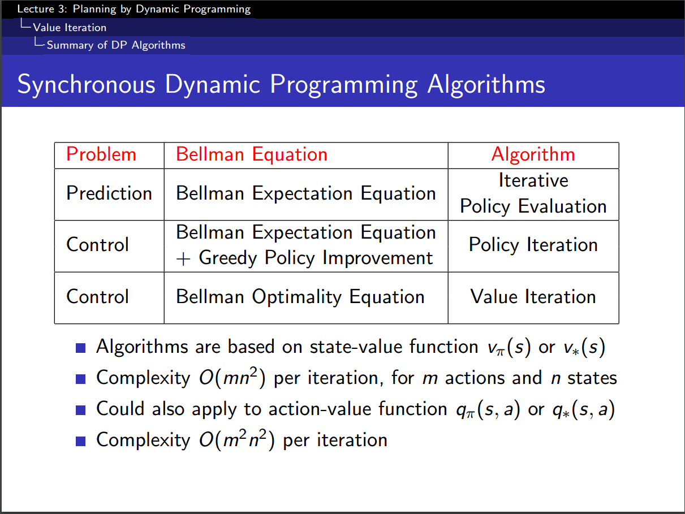
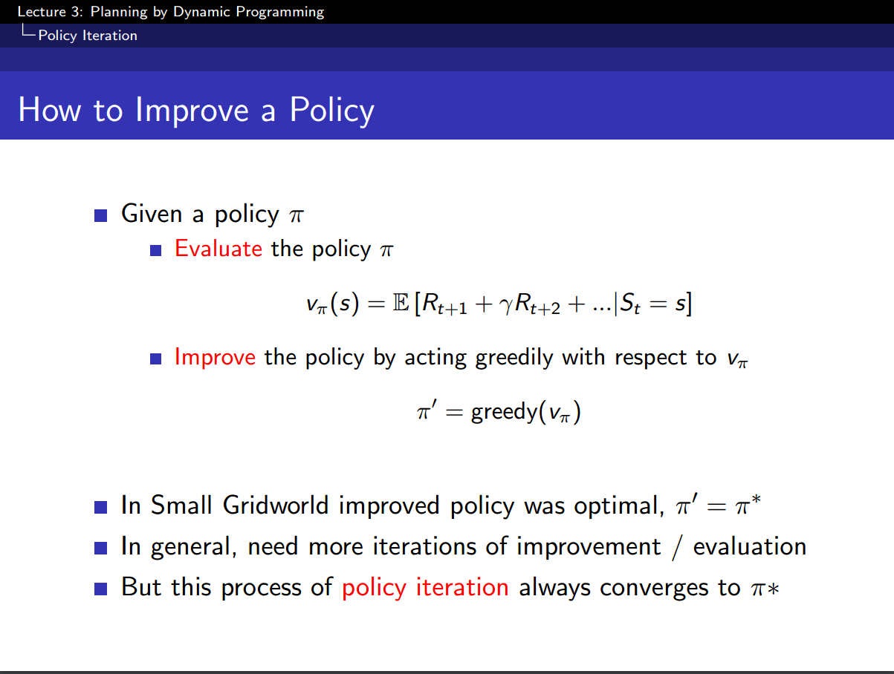
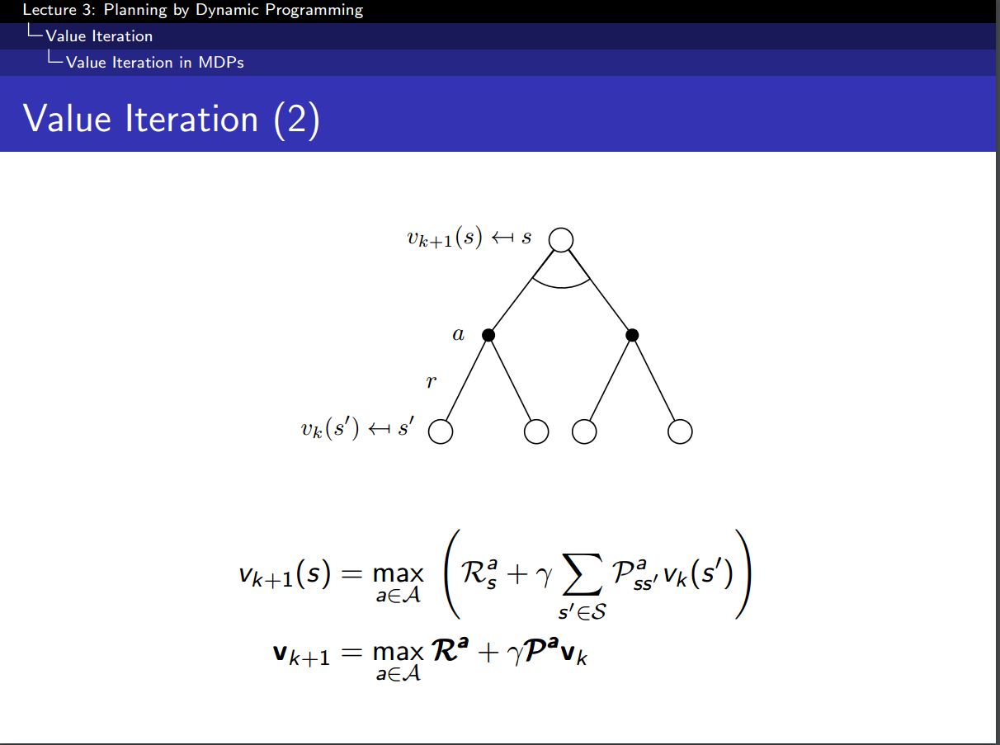

Work Journal 03
Weekend update
Friday
Friday was a mixed day, I managed to finsh what I planned in my job, fixed a fair amount of bugs and wrote the jarify and fuctionless blog post, but after that I went to the cinema and drank beers with friends until 3 a.m.
The movie, John Wick 2, was nice but left me a bit disapointed. The best summary of this movie was done by a friend: “The first one was an unexpected success, so they tried to do the same movie, but stronger”.
Saturday
Saturday was not very good either, I managed to watch the third video of reinforcement learning.
This mostly dealt with planning in Markov decision processes using dynamic programming. This lecture assumed that the planning problem was done with a model, thus all states and action value transitions were known (not the full reinforcement learning problem).
The three following slides are a good summary of what needs to be remembered from it:
  
The algorithms used there can also be applied in an asynchronus manner which makes then easier to implement (much like an SGD is a good tool in deep learning).
The convergence is given by the Bellman equation, since we provide a partial ordering of policies and get a better one at each iteration we are guaranteed to converge (bounded monotic function), and the convergence value is indeed the optimal one, which can be proven using the Bellman optimality equation.
Sunday
Plan
On sunday the plan is to:
- Read a fair amount of “The grid” and hopefuly finish it.
- Catch up on the work journal entries I missed the last two days
- Watch RL 4.
- Read chapters 1 and 2 of the Deep Learning book.
- Do a few exercises of craking the coding interview, in order to stay sharp.
- Read Detecting Cancer Metastases on Gigapixel Pathology Images.
- Fix pelican on my new computer (right now nothing is published).
I went to the library and planned my day in order to be less distracted and see if this indeed works.
Reality
Things went pretty well, the library is rather efficient.
Lesson 4 of RL introduced policy evaluation for in model-free problems. This has three approaches:
- Markov chains: sampling of an episode and update of the value function at the end.
- TD: sampling of a single step, and update at each step.
- TD(λ): sampling of multiple steps with updates.
TD(0), is bisaed but has much lower variance than MC, converges slightly better and is great for online learning. TD(λ) takes the best of the two worlds.
The grid chapters I read were mostly about how trees are bad, wires untrustworthy, why utilities are interest in smart counters and smart grids (mostly to control consumption by shutting down the AC in case of peak power) and why peak power is an issue (10% slack is needed 2% of the time and uses the worst genrators possible).
Cracking the coding interview, was surprisingly easy, I guess I stayed sharp on that or just remembered the solutions (quite likely).
I read 1 chapter of Deep Learning (Intro), which was rather interesting and presented the advances in that area.
The Google paper on CNN for breast cancer detection seemed more like a paper decribing how to use Inception and GoogLeNet, but I may have missed the point of it. On the other hand it is a great description of the thought process of the team (then again it is a 7 pages paper, so there is not much to write about).
I unfortunately did not fix pelican, I will try and do that tomorrow night.
I still have time to read the second chapter of Deep Learning but will probably not though.
Plan for Monday
Monday’s plan is the following
- Gym
- 7 km, with interval training
- 3 * 1 minute of planks
- 3 * 10 reverse crunches
- 3 * 10 pecs machine with 65Kgs
- Chapters 2 of
Deep Learningbook - 2 chapters of
The grid - Video 5 of Reinforcement learning
- Avocado salad for dinner
- Finish Folds chapter in the Haskell Book
Objectives of the week
Ideally I would like to finish:
- Reinforcement Learning class.
Deep Learningpart 1 (basic linear algebra, probas, optimisation and Machine Learning).- Deep Learning with Torch: the 60-minute blitz.
- Nuts and Bolts of Applying Deep Learning (Andrew Ng).
- Get an Idea of the pros and cons of torch vs keras vs cafe vs lasagna vs tensorflow.
- Look at the implementation of linear and logistic cells in torch.
Generally speaking, be done with the basic theory in deep learning / machine learning and start implementing models.